2021 | 1h 47m | Documentary, Adventure
The Rescue chronicles the enthralling, against-all-odds story of the daring rescue of twelve boys and their coach from deep inside a flooded cave in Northern Thailand. Utilizing never-before-seen material and exclusive interviews, this edge-of-your-seat documentary brings alive one of the most perilous and extraordinary rescue missions in modern history.
Directors: Elizabeth Chai Vasarhelyi, Jimmy Chin
Producers: E. Chai Vasarhelyi, Jimmy Chin, John Battsek, P.J. van Sandwijk
Starring: The Thai Navy SEALs, British Cave Divers, Rescue Teams
© National Geographic Documentary Films